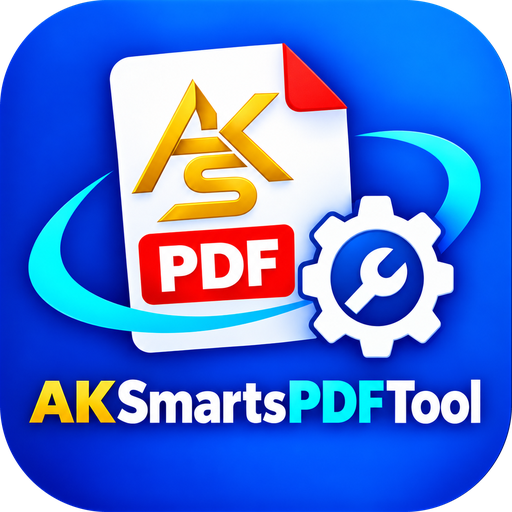

Can’t reach AK Smarts PDF
Check your internet connection, then press Ctrl + R to try again. If you double-clicked a PDF, open it again once you are online.

Check your internet connection, then press Ctrl + R to try again. If you double-clicked a PDF, open it again once you are online.